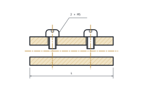

Brass electrical terminals & connectors
Terminal blocks, connectors, earth blocks and neutral links for wiring and panel boards, made to your drawing for switchgear, MCB and RCD makers.

- Process
- Cut from extruded brass profile, then milled, drilled and tapped
- Size range
- From M2 thread; current rating to your drawing
- Tolerance
- ±0.05 mm
- Threads
- M · UNC/UNF · BA · BSW
- Material
- Brass CW614N (IS 319 Type I)
- Finish
- Natural, or plated in our plant: nickel or tin; silver or chrome on request
- Documents
- EN 10204 3.1 mill certificate, certificate of conformity and final inspection report with every batch; PPAP Level 3 on request · Quality
- Volumes
- From a few thousand pieces to millions a year
Terminal parts we make
Made to your drawing or sample.
- Terminal blocks
- Terminal connectors
- Earth blocks
- Neutral links
- Switchgear components
- MCB and RCD terminals
Where they are used
- Equipment
- Wiring and panel boards; miniature circuit breakers (MCB), residual-current devices (RCD), circuit breakers and switchgear.
Buying terminals from AirGrip
Can you size a terminal to a current rating?
Tell us the rating and the mating cable or busbar; we work to your drawing or propose one for your approval.
Lead times, MOQ, NDA and delivery terms: Ordering & shipping.
Related


Send your terminal drawing
Include the current rating, plating and the mating cable or busbar.